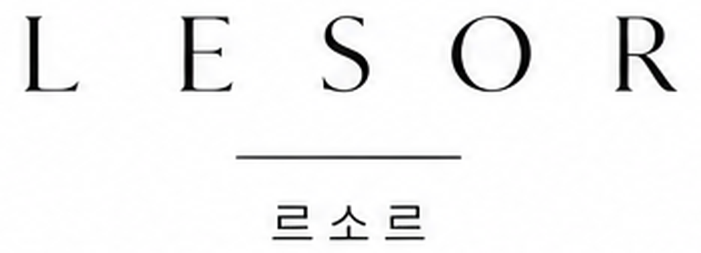
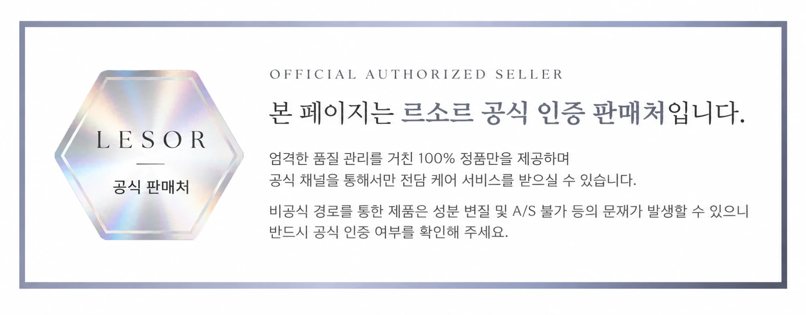

01
Recovery Care
매일의 루틴에 더하는 집중 케어

 LESOR / ADVANCED DAILY RECOVERY
LESOR / ADVANCED DAILY RECOVERY피부 컨디션이 무너진 날, 매일의 루틴에 더하는 집중 리커버리 앰플. 투명한 골드 텍스처와 정돈된 포뮬러로 피부 본연의 균형을 생각합니다.

좋은 피부 루틴은 복잡할 필요가 없습니다.
LESOR는 매일 손이 가는 사용감과 피부가 필요로 하는 균형을 고민합니다.
피부가 편안한 균형을 되찾도록 매일의 루틴에 집중 케어를 더합니다. 부담 없이 이어갈 수 있는 간결한 스킨케어 스텝을 제안합니다.

매일의 루틴에 더하는 집중 케어
피부 장벽 컨디션을 고려한 포뮬러
부드럽고 편안한 피부결 케어
피부 진정 및 회복 케어
건강한 피부 컨디션을 위한 성분
탄력 및 피부 컨디션 케어
제품 콘셉트의 핵심 원료
세안 후 토너로 피부결을 정돈합니다.
적당량을 덜어 얼굴 전체에 부드럽게 펴 발라 주세요.
필요에 따라 크림을 덧발라 마무리합니다.